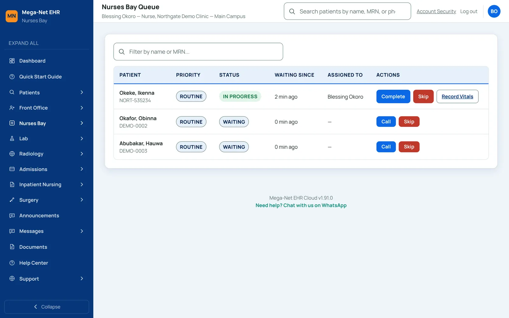
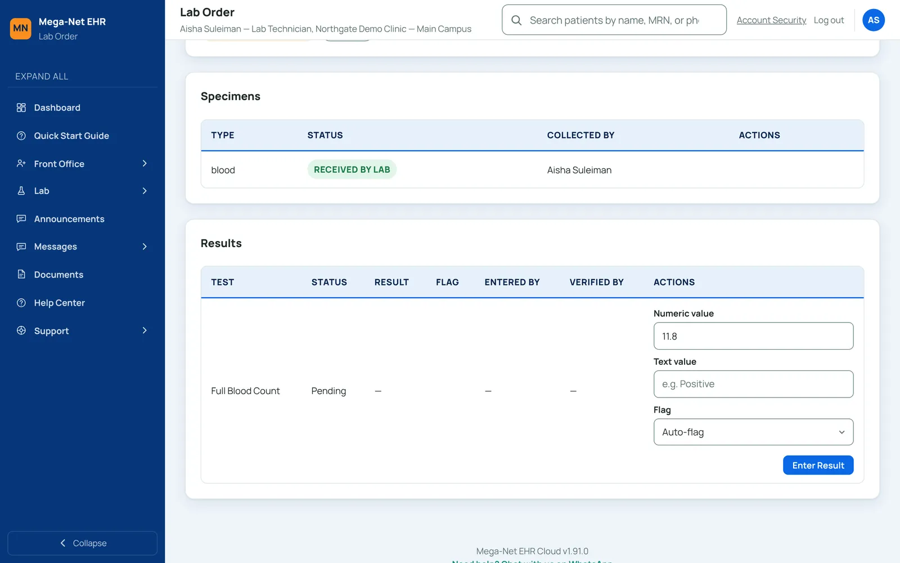

One cloud platform for your whole hospital — with Financial Sentinel to check your billing whenever you run it.
Patient records, appointments, pharmacy, laboratory, billing, HMO claims, and reporting — plus Financial Sentinel, which checks billing records on demand for gaps, duplicates, and price mismatches.
Not another EHR that makes promises about "someday."
A demo is available now. See the screens your team would use, then talk to us about setting it up for your facility.
You configure it, not us
Add staff, wards, tests, and tariffs yourself — no waiting on a vendor ticket to change how your facility runs.
Financial Sentinel
Rules-based anomaly detection on billing activity, explained in plain language — your team decides, the system just watches.
Data separated per hospital and facility
Each hospital's data is kept separate by organization, in the application's queries and with PostgreSQL row-level security policies. Department screens show the facility you are working in.
Support you can actually reach
In-app tickets and a direct WhatsApp line — help is never a separate system you have to log into.
Actively improving
New features ship regularly — not a system that goes quiet after purchase.
Every core clinical and business workflow, in one system.
Built to follow the order a patient actually moves through your facility.
Patient Management & EMR
Demographics, medical history, allergies, encounters, and clinical notes — one record per patient, always current.
Consultation & Nurses Bay
The doctor's workspace shows vitals, lab results, diagnoses, and clinical notes on one screen, with links to order labs and imaging and to write prescriptions on their own pages. Nurses record vitals on a form that shows the allowed range for each reading.
Appointment Management
Appointments and provider calendars scoped to your facility and staff, plus bookable rooms and equipment.
Online Appointment Booking
Patients book a visit directly from their phone — no account, no app download, no walking in first.
Laboratory Management
Order-to-result workflow: specimen tracking, reference-range flagging, independent result verification.
Radiology
Imaging orders, study recording, reports verified by a second person, and in-app alerts for urgent findings.
Pharmacy Management
Drug formulary, dispensing, and a controlled substance log — separate from prescribing, which stays with the doctor.
Billing & Revenue Management
Invoicing for self-pay and insured patients, payer tariff tables set up by your hospital's admin, and HMO claims tracked in the system from draft to paid.
Financial Sentinel
Anomaly detection on billing activity, with plain-language explanations your finance team can act on immediately.
Admissions, Wards & Nursing
A ward board, bed assignment, transfers, and discharge summaries — plus treatment sheets, fluid balance, and feeding charts where a mistake is corrected with a new linked entry rather than by editing the original.
Surgery Management
A theatre board and surgery scheduling, with procedure, surgeon, and anaesthesia details recorded.
Antenatal Care
Antenatal registration, visits with risk flags, and delivery outcomes, with registrations that can be marked as miscarriage, transferred, or lost to follow-up.
Inventory Management
Stock tracking for drugs and supplies, purchase orders, and a low-stock list.
Staff Messaging & Document Management
Internal messaging between staff, and a document register where staff record and categorise document links.
Reports & Analytics
Facility-wide reporting on visits, revenue, claims, lab turnaround, and stock — no spreadsheet exports required.
Staff Management
Add, edit, and manage staff accounts and roles yourself — no vendor ticket needed for routine changes.
Multi-Facility Management
Run a single clinic or a network of branches, with centralized visibility across every location.
Role-Based Access Control & Security
Every user sees only what their role requires, with facility-level data isolation and mandatory two-factor authentication for sensitive roles.
Help Center & Support
A searchable in-app Help Center, built-in support ticketing, and a direct WhatsApp line — help is never a separate system to log into.
The screens your team would use.
Screens from Mega-Net EHR Cloud, in the order a patient moves through a visit. Click or tap any screen to enlarge it.








Screens show fictional demo data.
Ordinary EHRs record what happened. Financial Sentinel reviews your billing records and points to what looks wrong whenever you run an analysis.
- Rules-based analysis runs on demand: someone with access presses Run Analysis, so you can check as often as you need, not only at month-end.
- Every flag comes with a plain-language explanation, not a raw log entry your team has to decode.
- The system detects and explains. Your team decides what to do — Sentinel never auto-reverses a charge on its own.
- Built directly into billing, so there's no separate audit tool to license, install, or reconcile against.
Patient data protection isn't a feature. It's the foundation.
Multi-Factor Authentication
Mandatory for org admins, physicians, and billing staff — a second verification step beyond a password.
Tenant Data Isolation
Each hospital's data is kept separate by organization, in the application's queries and with PostgreSQL row-level security policies.
Audit Log
Logins, patient registration, clinical notes and diagnoses, lab results, prescriptions and dispensing, invoices, payments and claims, imaging reports, and staff and role changes are recorded with who, what, and when.
Protected Credentials
The secrets behind two-factor authentication are encrypted at rest. Passwords and backup codes are stored as one-way hashes.
Runs on Android phones and desktops — role-based access means each staff member only sees what their role needs, on whatever device they're using.
Frequently asked questions
How long does implementation take?
Timelines depend on facility size and on setting up lab tests, the drug list, tariffs, wards and beds. We'll talk through your setup during your demo.
Does it work without a stable internet connection?
Mega-Net EHR Cloud is cloud-native. For facilities with a self-managed, offline-first setup, ask about Mega-Net HospitalPro instead.
How is it priced?
We share pricing after a short demo, so we can match it to your facility. Message us on WhatsApp +234 703 568 2478 or email Info@meganetsoftware.com.ng.
What does Financial Sentinel actually flag?
It checks six things: lab tests, imaging, dispensed drugs, or surgeries with no matching invoice charge; duplicate invoices or payments; capitation encounters that also have a claim; repeated claim rejections from one payer; claims pending too long; and invoice prices that differ from the tariff. Each finding comes with an explanation for your finance team to review.
Is support available?
Yes — in-app support tickets and a direct WhatsApp line.
Mega-Net Software builds other systems too, for organisations with different needs.
See the real thing. Not a mockup.
Book a walkthrough of Mega-Net EHR Cloud and see the screens your team would use.